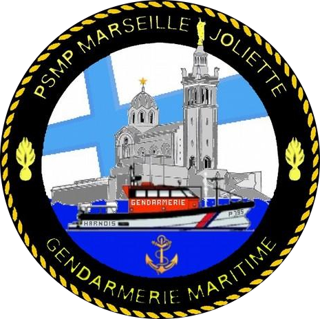
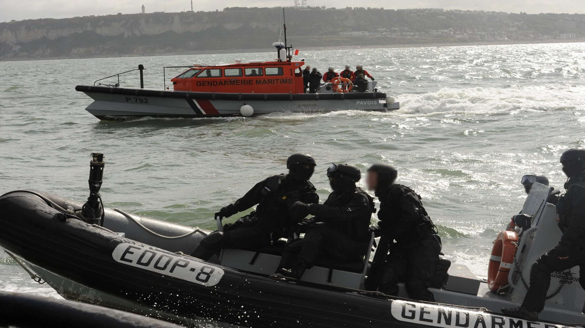

Peloton de sureté maritime et portuaire de Marseille-joliette

Missions :
Le PSMP a pour vocation la détection et la neutralisation des actes illicites qui pèsent sur les navires, les ports et les installations portuaires. Les actes illicites peuvent être répertoriés comme : - Des atteintes : - à la vie humaine, - à l'économie, - à l'environnement, - aux symboles. - Des actions terroristes : - Prise d'otage et de contrôle, - Destruction par projection de navire (Embarcation torpille, bombe cinétique...). - Déclenchement de charge explosive, écoterrorisme. - Les trafics illicites (armes, stupéfiants, contrefaçons...). - L'immigration clandestine. - Les actes de malveillance de droit commun.
Moyens :
- Mobilité : Moyen nautique : - Une Vedette de sûreté maritime, - 2 Embarcations semi-rigide. - Divers : - Des équipements lourd de combat.
Effectifs :
- 28 personnels : 1 Officier, 17 Sous-officiers, 8 Gendarmes adjoints volontaires (GAV) et 2 chiens spécialisés dans la recherche d'explosifs (EXPLO). - Police Judiciaire : OPJ : 12 personnels. Certains sous-officiers ont les spécialités/formations suivantes : - PEG/Navigateur, - MECADEV (Mécanicien), - Maitre de chien, - Plongeur de bord, - RECOnnaissance et Neutralisation d’Engin EXplosif (Reco-Nedex).